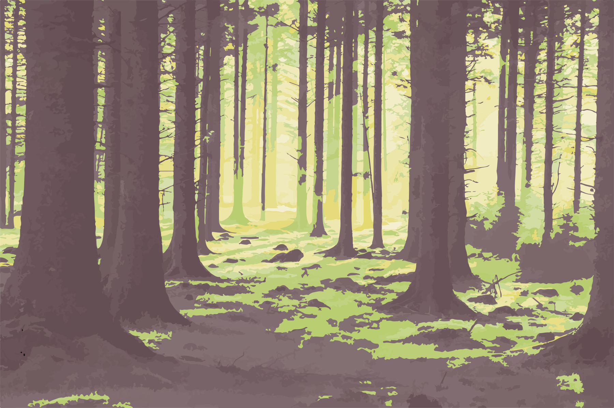
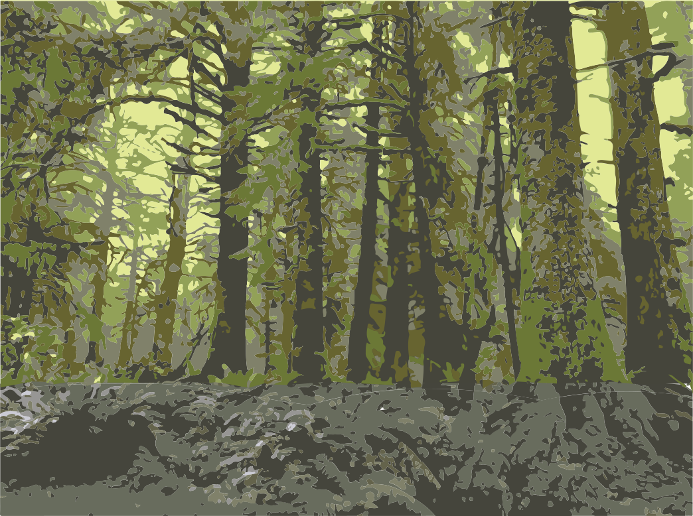
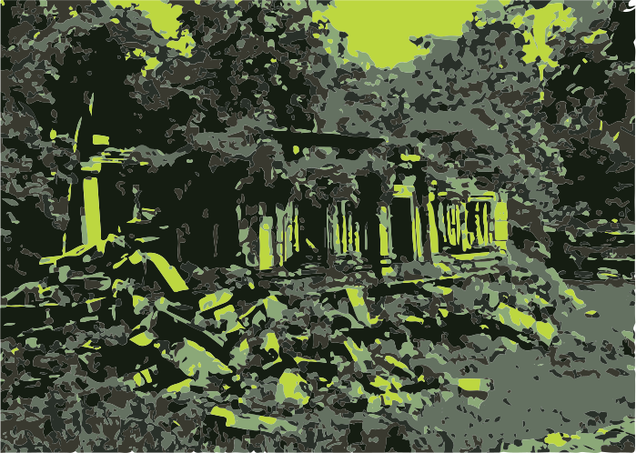
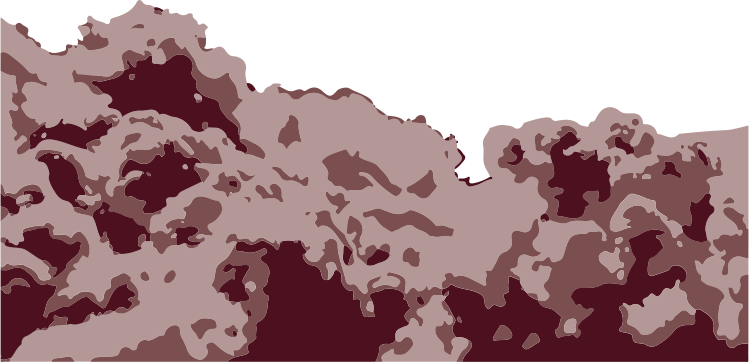
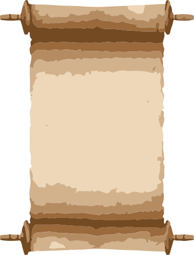
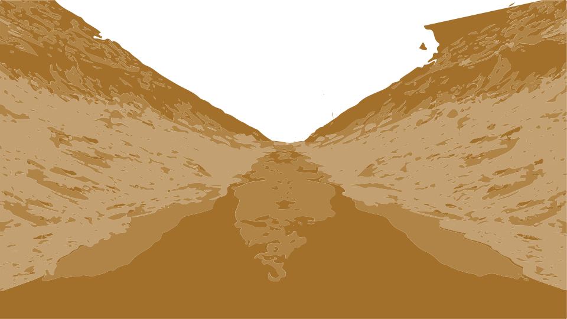

Once when the wind was soft and scented I heard the south calling, and sailed endlessly and languorously under strange stars.
When the last days were upon me, and the ugly trifles of existence began to drive me to madness like the small drops of water that torturers let fall ceaselessly upon one spot of their victims body,
I loved the irradiate refuge of sleep.
In my dreams I found a little of the beauty I had vainly sought in life, and wandered through old gardens and enchanted woods.
Once when the wind was soft and scented I heard the south calling, and sailed endlessly and languorously under strange stars.
Once when the gentle rain fell I glided in a barge down a sunless stream under the earth

till I reached another world of purple twilight, iridescent arbours, and undying roses.
And once I walked through a golden valley that led to shadowy groves and ruins,
and ended in a mighty wall green with antique vines,

and pierced by a little ocean of bronze.
Many times I walked through that valley, and longer and longer would I pause in the spectral half-light where the giant trees squirmed and twisted grotesquely,
and the grey ground stretched damply from trunk to trunk,
some times disclosing the mould-stained stones of buried temples.

And alway the goal of my fancies was the mighty vine-grown wall with the little ocean of bronze therein.
After a while, as the days of waking became less and less bearable from their greyness and sameness, I would often drift in opiate peace through the valley and the shadowy groves, and wonder how I might seize them for my eternal dwelling-place,
so that I need no more crawl back to a dull world stript of interest and new colours. And as I looked upon the little ocean in the mighty wall, I felt that beyond it lay a dream-country from which, once it was entered,
there would be no return.
So each night in sleep I strove to find the hidden latch of the ocean in the ivied antique wall, though it was exceedingly well hidden.
And I would tell myself that the realm beyond the wall was not more lasting merely, but more lovely and radiant as well.
Then one night in the dream-city of Zakarion I found a yellowed papyrus filled with the thoughts of dream-sages who dwelt of old in that city, and who were too wise ever to be born in the waking world. Therein were written many things concerning the world of dream, and among them was lore of a golden valley and a sacred grove with temples, and a high wall pierced by a little bronze ocean.
When I saw this lore, I knew that it touched on the scenes I had haunted, and I therefore read long in the yellowed papyrus.
Some of the dream-sages wrote gorgeously of the wonders beyond the irrepassable ocean,
but others told of horror and disappointment.
I knew not which to believe, yet longed more and more to cross for ever into the unknown land; for doubt and secrecy are the lure of lures, and no new horror can be more terrible than the daily torture of the commonplace.
So when I learned of the drug which would unlock the ocean and drive me through, I resolved to take it when next I awaked.
Last night I swallowed the drug and floated dreamily into the golden valley and the shadowy groves;
and when I came this time to the antique wall, I saw that the small ocean of bronze was ajar. From beyond came a glow that weirdly lit the giant twisted trees and the tops of the buried temples,

and I drifted on songfully, expectant of the glories of the land from whence I should never return.
But as the ocean swung wider and the sorcery of the drug and the dream pushed me through,

I knew that all sights and glories were at an end; for in that new realm was neither land nor sea, but only the white void of unpeopled and illimitable space.
So, happier than I had ever dared hope to be, I dissolved again into that native infinity of crystal oblivion from which the daemon Life had called me for one brief and desolate hour.